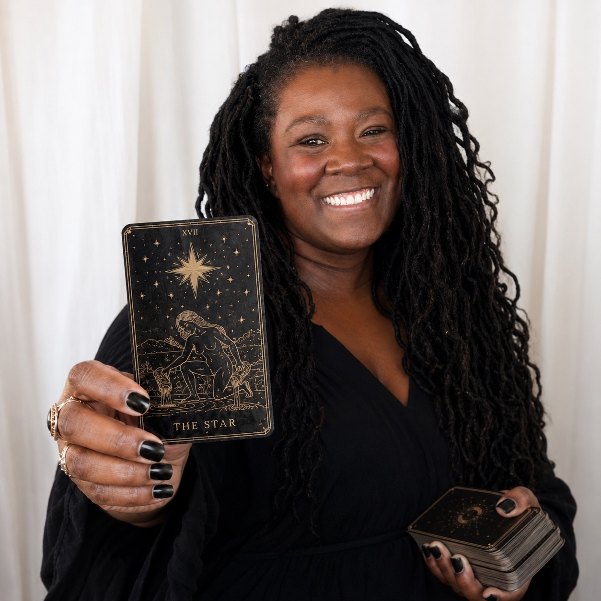

The person behind the cards
Meet Erin.

A little intuition. A meaningful moment.
The Midnight Draw brings personal tarot readings to parties, celebrations and gatherings throughout Southern California. Erin's approach is welcoming, conversational and rooted in reflection rather than prediction.
With six years of tarot reading experience, Erin creates an inviting space where guests can explore a question, consider a new perspective or simply enjoy a moment of connection.
Each event features a thoughtfully styled reading area designed to complement the gathering.
Inquire About Your Event